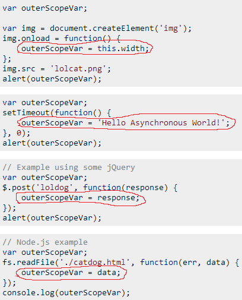
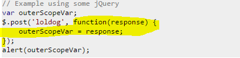

Given the following examples, why is outerScopeVar undefined in all cases?
var outerScopeVar;
var img = document.createElement('img');
img.onload = function() {
outerScopeVar = this.width;
};
img.src = 'lolcat.png';
alert(outerScopeVar);
var outerScopeVar;
setTimeout(function() {
outerScopeVar = 'Hello Asynchronous World!';
}, 0);
alert(outerScopeVar);
// Example using some jQuery
var outerScopeVar;
$.post('loldog', function(response) {
outerScopeVar = response;
});
alert(outerScopeVar);
// Node.js example
var outerScopeVar;
fs.readFile('./catdog.html', function(err, data) {
outerScopeVar = data;
});
console.log(outerScopeVar);
// with promises
var outerScopeVar;
myPromise.then(function (response) {
outerScopeVar = response;
});
console.log(outerScopeVar);
// with observables
var outerScopeVar;
myObservable.subscribe(function (value) {
outerScopeVar = value;
});
console.log(outerScopeVar);
// geolocation API
var outerScopeVar;
navigator.geolocation.getCurrentPosition(function (pos) {
outerScopeVar = pos;
});
console.log(outerScopeVar);
Why does it output undefined in all of these examples? I don't want workarounds, I want to know why this is happening.
Note: This is a canonical question for JavaScript asynchronicity. Feel free to improve this question and add more simplified examples which the community can identify with.
| 11 | Related Meta discussion - General JavaScript asynchronicity reference for close voting? - Bernhard Barker 16 May 2014 at 00:02 |
| @Dukeling thanks, I'm pretty sure that I had commented with that link but there are apparently some missing comments. Also, regarding your edit: I believe having "canonical" and "asynchronicity" in the title helps when searching for this question to mark another question as a dupe. And of course, it also helps in finding this question from Google when looking for asynchronicity explanations. - Fabrício Matté 16 May 2014 at 00:18 | |
| 8 | Putting a bit more of thought, "canonical asynchronicity topic" is a bit heavy on the title, "asynchronous code reference" is simpler and more objective. I also believe most people search for "asynchronous" instead of "asynchronicity". - Fabrício Matté 20 May 2014 at 12:16 |
| 4 | Some people initialize their variable before the function call. How about changing the title that somehow represents that as well? Like "Why is my variable unaltered after I modify it inside of a function?" ? - Felix Kling 7 Jul 2014 at 08:32 |
| 1 | In all the code examples that you have mentioned above, "alert(outerScopeVar);" executes NOW , whereas assigning of value to "outerScopeVar" happens LATER(asynchronously). - refactor 3 May 2016 at 08:52 |
| If possible, I'd like to include this issue in your question and community answer. This self-answered question suggests that some people believe that due to the Chrome lazy console evaluation bug, that the above pattern actually does work. Can we somehow include that in here or should that be a new question entirely? - Patrick Roberts 1 Feb 2018 at 23:15 | |
| I added/modified the alerts in the first couple of samples so that I think the alerts show the answer. If that helps then I or someone can make corresponding edits to the other samples. - Sam Hobbs 6 Dec 2018 at 20:35 | |
| Does this answer your question? How to return the response from an asynchronous call - user3840170 24 Jan 2022 at 15:30 |
One word answer: asynchronicity.
This topic has been iterated at least a couple of thousands of times here in Stack Overflow. Hence, first off I'd like to point out some extremely useful resources:
@Felix Kling's answer to "How do I return the response from an asynchronous call?". See his excellent answer explaining synchronous and asynchronous flows, as well as the "Restructure code" section.
@Benjamin Gruenbaum has also put a lot of effort into explaining asynchronicity in the same thread.
@Matt Esch's answer to "Get data from fs.readFile" also explains asynchronicity extremely well in a simple manner.
Let's trace the common behavior first. In all examples, the outerScopeVar is modified inside of a function. That function is clearly not executed immediately; it is being assigned or passed as an argument. That is what we call a callback.
Now the question is, when is that callback called?
It depends on the case. Let's try to trace some common behavior again:
img.onload may be called sometime in the future when (and if) the image has successfully loaded.setTimeout may be called sometime in the future after the delay has expired and the timeout hasn't been canceled by clearTimeout. Note: even when using 0 as delay, all browsers have a minimum timeout delay cap (specified to be 4ms in the HTML5 spec).$.post's callback may be called sometime in the future when (and if) the Ajax request has been completed successfully.fs.readFile may be called sometime in the future when the file has been read successfully or thrown an error.In all cases, we have a callback that may run sometime in the future. This "sometime in the future" is what we refer to as asynchronous flow.
Asynchronous execution is pushed out of the synchronous flow. That is, the asynchronous code will never execute while the synchronous code stack is executing. This is the meaning of JavaScript being single-threaded.
More specifically, when the JS engine is idle -- not executing a stack of (a)synchronous code -- it will poll for events that may have triggered asynchronous callbacks (e.g. expired timeout, received network response) and execute them one after another. This is regarded as Event Loop.
That is, the asynchronous code highlighted in the hand-drawn red shapes may execute only after all the remaining synchronous code in their respective code blocks have executed:

In short, the callback functions are created synchronously but executed asynchronously. You can't rely on the execution of an asynchronous function until you know it has been executed, and how to do that?
It is simple, really. The logic that depends on the asynchronous function execution should be started/called from inside this asynchronous function. For example, moving the alerts and console.logs inside the callback function would output the expected result because the result is available at that point.
Often you need to do more things with the result from an asynchronous function or do different things with the result depending on where the asynchronous function has been called. Let's tackle a bit more complex example:
var outerScopeVar;
helloCatAsync();
alert(outerScopeVar);
function helloCatAsync() {
setTimeout(function() {
outerScopeVar = 'Nya';
}, Math.random() * 2000);
}
Note: I'm using setTimeout with a random delay as a generic asynchronous function; the same example applies to Ajax, readFile, onload, and any other asynchronous flow.
This example clearly suffers from the same issue as the other examples; it is not waiting until the asynchronous function executes.
Let's tackle it by implementing a callback system of our own. First off, we get rid of that ugly outerScopeVar which is completely useless in this case. Then we add a parameter that accepts a function argument, our callback. When the asynchronous operation finishes, we call this callback, passing the result. The implementation (please read the comments in order):
// 1. Call helloCatAsync passing a callback function,
// which will be called receiving the result from the async operation
helloCatAsync(function(result) {
// 5. Received the result from the async function,
// now do whatever you want with it:
alert(result);
});
// 2. The "callback" parameter is a reference to the function which
// was passed as an argument from the helloCatAsync call
function helloCatAsync(callback) {
// 3. Start async operation:
setTimeout(function() {
// 4. Finished async operation,
// call the callback, passing the result as an argument
callback('Nya');
}, Math.random() * 2000);
}
Code snippet of the above example:
// 1. Call helloCatAsync passing a callback function,
// which will be called receiving the result from the async operation
console.log("1. function called...")
helloCatAsync(function(result) {
// 5. Received the result from the async function,
// now do whatever you want with it:
console.log("5. result is: ", result);
});
// 2. The "callback" parameter is a reference to the function which
// was passed as an argument from the helloCatAsync call
function helloCatAsync(callback) {
console.log("2. callback here is the function passed as argument above...")
// 3. Start async operation:
setTimeout(function() {
console.log("3. start async operation...")
console.log("4. finished async operation, calling the callback, passing the result...")
// 4. Finished async operation,
// call the callback passing the result as argument
callback('Nya');
}, Math.random() * 2000);
}Most often in real use cases, the DOM API and most libraries already provide the callback functionality (the helloCatAsync implementation in this demonstrative example). You only need to pass the callback function and understand that it will execute out of the synchronous flow and restructure your code to accommodate for that.
You will also notice that due to the asynchronous nature, it is impossible to return a value from an asynchronous flow back to the synchronous flow where the callback was defined, as the asynchronous callbacks are executed long after the synchronous code has already finished executing.
Instead of returning a value from an asynchronous callback, you will have to make use of the callback pattern, or... Promises.
Although there are ways to keep the callback hell at bay with vanilla JS, promises are growing in popularity and are currently being standardized in ES6 (see Promise - MDN).
Promises (a.k.a. Futures) provide a more linear, and thus pleasant, reading of the asynchronous code, but explaining their entire functionality is out of the scope of this question. Instead, I'll leave these excellent resources for the interested:
Note: I've marked this answer as Community Wiki. Hence anyone with at least 100 reputations can edit and improve it! Please feel free to improve this answer or submit a completely new answer if you'd like as well.
I want to turn this question into a canonical topic to answer asynchronicity issues that are unrelated to Ajax (there is How to return the response from an AJAX call? for that), hence this topic needs your help to be as good and helpful as possible!
| 1 | In your last example, is there a specific reason why you use anonymous functions or would it work the same by using named functions? - JDelage 3 May 2016 at 21:34 |
| 1 | The code examples are a bit weird as you're declaring the function after calling it. Works because of hoisting of course, but was it intentional? - Bergi 5 May 2016 at 22:12 |
| 3 | is it deadlock . felix kling is pointing to your answer and you are pointing to felix answer - Mahi 2 Jan 2017 at 10:23 |
| 2 | You need to understand that the red circle code is only async because it is being executed by NATIVE async javascript functions. This is a feature of your javascript engine--whether it be Node.js or a browser. It is async because it is being passed in as a "callback" to a function that is essentially a black box (implemented in C etc..). To the hapless developer they are async...just because. If you want to write your own async function you have to hack it by sending it in to SetTimeout(myfunc,0). Should you do that? Another debate....probably not. - Sean Anderson 5 Jan 2017 at 19:08 |
| How would this work if the functions being called were in a separate file? - The_Redhawk 19 Mar 2022 at 17:52 |
Fabrício's answer is spot on; but I wanted to complement his answer with something less technical, which focusses on an analogy to help explain the concept of asynchronicity.
Yesterday, the work I was doing required some information from a colleague. I rang him up; here's how the conversation went:
Me: Hi Bob, I need to know how we foo'd the bar'd last week. Jim wants a report on it, and you're the only one who knows the details about it.
Bob: Sure thing, but it'll take me around 30 minutes?
Me: That's great Bob. Give me a ring back when you've got the information!
At this point, I hung up the phone. Since I needed information from Bob to complete my report, I left the report and went for a coffee instead, then I caught up on some email. 40 minutes later (Bob is slow), Bob called back and gave me the information I needed. At this point, I resumed my work with my report, as I had all the information I needed.
Imagine if the conversation had gone like this instead;
Me: Hi Bob, I need to know how we foo'd the bar'd last week. Jim want's a report on it, and you're the only one who knows the details about it.
Bob: Sure thing, but it'll take me around 30 minutes?
Me: That's great Bob. I'll wait.
And I sat there and waited. And waited. And waited. For 40 minutes. Doing nothing but waiting. Eventually, Bob gave me the information, we hung up, and I completed my report. But I'd lost 40 minutes of productivity.
This is exactly what is happening in all the examples in our question. Loading an image, loading a file off disk, and requesting a page via AJAX are all slow operations (in the context of modern computing).
Rather than waiting for these slow operations to complete, JavaScript lets you register a callback function which will be executed when the slow operation has completed. In the meantime, however, JavaScript will continue to execute other code. The fact that JavaScript executes other code whilst waiting for the slow operation to complete makes the behaviorasynchronous. Had JavaScript waited around for the operation to complete before executing any other code, this would have been synchronous behavior.
var outerScopeVar;
var img = document.createElement('img');
// Here we register the callback function.
img.onload = function() {
// Code within this function will be executed once the image has loaded.
outerScopeVar = this.width;
};
// But, while the image is loading, JavaScript continues executing, and
// processes the following lines of JavaScript.
img.src = 'lolcat.png';
alert(outerScopeVar);
In the code above, we're asking JavaScript to load lolcat.png, which is a sloooow operation. The callback function will be executed once this slow operation has done, but in the meantime, JavaScript will keep processing the next lines of code; i.e. alert(outerScopeVar).
This is why we see the alert showing undefined; since the alert() is processed immediately, rather than after the image has been loaded.
In order to fix our code, all we have to do is move the alert(outerScopeVar) code into the callback function. As a consequence of this, we no longer need the outerScopeVar variable declared as a global variable.
var img = document.createElement('img');
img.onload = function() {
var localScopeVar = this.width;
alert(localScopeVar);
};
img.src = 'lolcat.png';
You'll always see a callback is specified as a function, because that's the only* way in JavaScript to define some code, but not execute it until later.
Therefore, in all of our examples, the function() { /* Do something */ } is the callback; to fix all the examples, all we have to do is move the code which needs the response of the operation into there!
* Technically you can use eval() as well, but eval() is evil for this purpose
You might currently have some code similar to this;
function getWidthOfImage(src) {
var outerScopeVar;
var img = document.createElement('img');
img.onload = function() {
outerScopeVar = this.width;
};
img.src = src;
return outerScopeVar;
}
var width = getWidthOfImage('lolcat.png');
alert(width);
However, we now know that the return outerScopeVar happens immediately; before the onload callback function has updated the variable. This leads to getWidthOfImage() returning undefined, and undefined being alerted.
To fix this, we need to allow the function calling getWidthOfImage() to register a callback, then move the alert'ing of the width to be within that callback;
function getWidthOfImage(src, cb) {
var img = document.createElement('img');
img.onload = function() {
cb(this.width);
};
img.src = src;
}
getWidthOfImage('lolcat.png', function (width) {
alert(width);
});
... as before, note that we've been able to remove the global variables (in this case width).
| 12 | But how is alerting or sending to console useful if you want to use the results in a different calculation, or store it in an object variable? - Ken Ingram 22 Mar 2019 at 21:51 |
| 3 | This is the most useful, quick and concise answer on the entire stackoverflow. Thanks. - MasterMind 31 May 2021 at 13:22 |
| The final code example shows the usage of another parameter - here src - that is not related with with the callback function and that is even inserted in code after the callback. Short and concise as Mastermind writes! - Timo 6 Mar 2022 at 07:48 | |
How do I know that img.onload=function(){.. is asynchronous when I maybe could rewrite it to function img.onload(){.. which is not possible but which seems synchronous. LIes it in the JS feeling that one should get after reading a lot of this shit? - Timo 6 Mar 2022 at 08:15 |
Here's a more concise answer for people that are looking for a quick reference as well as some examples using promises and async/await.
Start with the naive approach (that doesn't work) for a function that calls an asynchronous method (in this case setTimeout) and returns a message:
function getMessage() {
var outerScopeVar;
setTimeout(function() {
outerScopeVar = 'Hello asynchronous world!';
}, 0);
return outerScopeVar;
}
console.log(getMessage());
undefined gets logged in this case because getMessage returns before the setTimeout callback is called and updates outerScopeVar.
The two main ways to solve it are using callbacks and promises:
Callbacks
The change here is that getMessage accepts a callback parameter that will be called to deliver the results back to the calling code once available.
function getMessage(callback) {
setTimeout(function() {
callback('Hello asynchronous world!');
}, 0);
}
getMessage(function(message) {
console.log(message);
});
Promises provide an alternative which is more flexible than callbacks because they can be naturally combined to coordinate multiple async operations. A Promises/A+ standard implementation is natively provided in node.js (0.12+) and many current browsers, but is also implemented in libraries like Bluebird and Q.
function getMessage() {
return new Promise(function(resolve, reject) {
setTimeout(function() {
resolve('Hello asynchronous world!');
}, 0);
});
}
getMessage().then(function(message) {
console.log(message);
});
jQuery Deferreds
jQuery provides functionality that's similar to promises with its Deferreds.
function getMessage() {
var deferred = $.Deferred();
setTimeout(function() {
deferred.resolve('Hello asynchronous world!');
}, 0);
return deferred.promise();
}
getMessage().done(function(message) {
console.log(message);
});
async/await
If your JavaScript environment includes support for async and await (like Node.js 7.6+), then you can use promises synchronously within async functions:
function getMessage () {
return new Promise(function(resolve, reject) {
setTimeout(function() {
resolve('Hello asynchronous world!');
}, 0);
});
}
async function main() {
let message = await getMessage();
console.log(message);
}
main();
| 4 | Your sample on Promises is basically what I've been searching for, for the past few hours. Your example is beautiful and explains Promises at the same time. Why this is not anywhere else is boggling. - Vincent P 8 Jan 2016 at 08:40 |
| This is all fine, but what if you need to call getMessage() with parameters? How would you write the above in that scenario? - Chiwda 1 Aug 2017 at 17:51 | |
| 2 | @Chiwda You just put the callback parameter last: function getMessage(param1, param2, callback) {...}. - JohnnyHK 1 Aug 2017 at 19:09 |
| The $.Deferred() implementation you provided is just what I was looking for with jQuery, since I'm running old packages, thank you. - Daggerpov 30 May 2023 at 20:53 |
| 17 | Whereas trying to make an asynchronous function act synchronously would be trying to drink the coffee at 1 second, and having it poured into your lap at 1 minute. - Teepeemm 10 Dec 2015 at 15:22 |
| If it were stating the obvious, I don't think the question would have been asked, No? - broccoli2000 3 Jul 2016 at 13:10 | |
| 2 | @broccoli2000 By that I didn't mean that the question was obvious, but that it's obvious what the cup represents in the drawing :) - Johannes Fahrenkrug 29 Sep 2016 at 19:24 |
| If the cup is the variable, then where is the function? - JoePythonKing 9 Jan 2022 at 20:58 |
The other answers are excellent and I just want to provide a straight forward answer to this. Just limiting to jQuery asynchronous calls
All ajax calls (including the $.get or $.post or $.ajax) are asynchronous.
Considering your example
var outerScopeVar; //line 1
$.post('loldog', function(response) { //line 2
outerScopeVar = response;
});
alert(outerScopeVar); //line 3
The code execution starts from line 1, declares the variable and triggers and asynchronous call on line 2, (i.e., the post request) and it continues its execution from line 3, without waiting for the post request to complete its execution.
Lets say that the post request takes 10 seconds to complete, the value of outerScopeVar will only be set after those 10 seconds.
To try out,
var outerScopeVar; //line 1
$.post('loldog', function(response) { //line 2, takes 10 seconds to complete
outerScopeVar = response;
});
alert("Lets wait for some time here! Waiting is fun"); //line 3
alert(outerScopeVar); //line 4
Now when you execute this, you would get an alert on line 3. Now wait for some time until you are sure the post request has returned some value. Then when you click OK, on the alert box, next alert would print the expected value, because you waited for it.
In real life scenario, the code becomes,
var outerScopeVar;
$.post('loldog', function(response) {
outerScopeVar = response;
alert(outerScopeVar);
});
All the code that depends on the asynchronous calls, is moved inside the asynchronous block, or by waiting on the asynchronous calls.
In all these scenarios outerScopeVar is modified or assigned a value asynchronously or happening in a later time(waiting or listening for some event to occur),for which the current execution will not wait.So all these cases current execution flow results in outerScopeVar = undefined
Let's discuss each examples(I marked the portion which is called asynchronously or delayed for some events to occur):
1.
Here we register an eventlistner which will be executed upon that particular event.Here loading of image.Then the current execution continuous with next lines img.src = 'lolcat.png'; and alert(outerScopeVar); meanwhile the event may not occur. i.e, funtion img.onload wait for the referred image to load, asynchrously. This will happen all the folowing example- the event may differ.
2.
Here the timeout event plays the role, which will invoke the handler after the specified time. Here it is 0, but still it registers an asynchronous event it will be added to the last position of the Event Queue for execution, which makes the guaranteed delay.
3.
 This time ajax callback.
4.
Node can be consider as a king of asynchronous coding.Here the marked function is registered as a callback handler which will be executed after reading the specified file.
5.
Obvious promise (something will be done in future) is asynchronous. see What are the differences between Deferred, Promise and Future in JavaScript?
https://www.quora.com/Whats-the-difference-between-a-promise-and-a-callback-in-Javascript
The short answer is : asynchronicity.
Why asynchronous is needed?
JavaScript is single-threaded, meaning that two bits of the script cannot run at the same time; they have to run one after another. In browsers, JavaScript shares a thread with a load of other stuff that differs from browser to browser. But typically JavaScript is in the same queue as painting, updating styles, and handling user actions (such as highlighting text and interacting with form controls). Activity in one of these things delays the others.
You've probably used events and callbacks to get around this. Here are events:
var img1 = document.querySelector('.img-1');
img1.addEventListener('load', function() {
// image loaded
console.log("Loaded");
});
img1.addEventListener('error', function() {
// error caught
console.log("Error printed");
});<img class="img-1" src="#" alt="img">This isn't sneezy at all. We get the image, add a couple of listeners, then JavaScript can stop executing until one of those listeners is called.
Unfortunately, in the example above, it's possible that the events happened before we started listening for them, so we need to work around that using the "complete" property of images:
var img1 = document.querySelector('.img-1');
function loaded() {
// image loaded
console.log("Loaded");
}
if (img1.complete) {
loaded();
} else {
img1.addEventListener('load', loaded);
}
img1.addEventListener('error', function() {
// error caught
console.log("Error printed");
});<img class="img-1" src="#" alt="img">This doesn't catch images that errored before we got a chance to listen for them; unfortunately, the DOM doesn't give us a way to do that. Also, this is loading one image. Things get even more complex if we want to know when a set of images have loaded.
Events aren't always the best way
Events are great for things that can happen multiple times on the same object— keyup, touchstart etc. With those events, you don't really care about what happened before you attached the listener.
The two main ways to do it correctly: are callbacks and promises.
Callbacks
Callbacks are functions that are passed inside the arguments of other functions, this procedure is valid in JavaScript because functions are objects and objects can be passed as arguments to functions. The basic structure of the callback function looks something like this:
function getMessage(callback) {
callback();
}
function showMessage() {
console.log("Hello world! I am a callback");
}
getMessage(showMessage);Promise
Although there are ways to keep the callback hell at bay with vanilla JS, promises are growing in popularity and are currently being standardized in ES6 (see Promise).
A promise is a placeholder representing the eventual result (value) of an asynchronous operation
If you don't need to know when something happened, but just whether it happened or not, then a promise is what you are looking for.
A promise is a bit like an event listener, except that:
Note: Always return a result from a function inside a Promise, otherwise there's nothing for the subsequent function to act on.
Promise Terminology
A promise can be:
How to Create a Promise
function getMessage() {
return new Promise(function(resolve, reject) {
setTimeout(function() {
resolve('Hello world! I am a promise');
}, 0);
});
}
getMessage().then(function(message) {
console.log(message);
});{kind=link}
{kind=link}
{kind=link}
{kind=link}
{kind=link}
{kind=link}